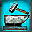
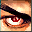
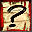
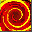
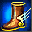
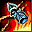
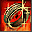
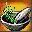
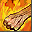
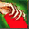

Skills
Skills have various different uses, some extremeley useful and 'must-get', and others not very useful or effectively deprecated. This is a list of all the skills and where you can buy them, followed by detailed information on the skills (taken from the SRO skills page, which I had a link to but which no longer exists).
| Skills | |||
|---|---|---|---|
| Name | Description | Location | |
|  | Forge Weapon | Combine weapon components with normal weapons to create more powerful weapons. Higher level allows you to combine more components. | YA, KT, QS, SSC, SWC, LY, YM, TYC, HW |
|  | Detect Hidden | Has a chance of detecting invisible creatures within 60 meters. Higher rank gives you more chance of detecting creatures. | AS, Bu, FV, LY, SSC, KOH, QH, XD, NW, Ma, XH, PA, XT, YC, LL, SM, QL, SH, TYC, HW |
| Evaluate | Learn the attributes of a targeted creature within 30 meters. Higher rank gives you more information about the target. | Xu, Hu, BS, AS, PCV, Bu, SWC, LY, RMH, QH, XD, NW, Ma, XH, PA, XT, YC, LL, BL, QL, SH, TYC, HW | |
|  | Identify | Can identify some unidentified items whenever you open your inventory. Higher rank allows you to identify more powerful items. | Xu, YA, XY, ZP, KT, Hu, QS, AD, BS, AS, Bu, FV, PCV, RMH, MXC, QH, XD, NW, Ma, XH, PA, XT, YC, LL, YM, QL, SH, TYC, HW |
|  | Resuscitate | Revive a fallen player character at the cost of 1 Chi per level of the target, if the target was not down for longer than 6 seconds per rank. Higher rank also gives more hit points to target. | XY, KT, BS, Bu, FV, LY, PCV, RMH, KOH, QH, XD, NW, Ma, XH, PA, XT, YC, LL, BL, QL, SH, TYC, HW |
| Prowl | Turns you invisible but you cannot do anything but walk. Costs 10 Chi, plus 6 chi per 6 seconds. Higher rank makes it harder to be detected. | FV, SMC, YM, NA, QL, TYC, HW | |
|  | Sprint | Increase your running speed. Costs 6 Chi per 6 seconds when turned on. Higher rank gives higher running speed. | Xu, ZP, QS, SM, TYC, HW |
|  | Craft Wearable | Combine components to create armwear and footwear. Higher rank allows you to combine more components. | ZP, QS, RMH, SWC, MXC, YM, TYC, HW |
|  | Craft Jewelery | Combine components to create amulets and rings. Higher rank allows you to combine more components. | YA, Hu, AD, PCV, SSC, SMC, BL, TYC, HW |
|  | Brew Medicine | Combine herbs to create new medicines. Higher rank allows you to combine more herbs. | XY, ZP, AD, AS, KOH, MXC, BL, NA, TYC, HW |
|  | Taunt | Enrages NPC target, making it more likely to switch its target to attack you instead of its current target. | Xu, ZP, QS, SM |
| Guard | Guard and defend a target PC or NPC from being damaged by an enemy's attack. You redirect part of the damage done on the target you are guarding to yourself. | AS, FV, LY, RMH, PCV, BL | |
|  | Pick Pocket | Has a chance of stealing a random item from a targeted creature within 5 meters. Takes 6 seconds to activate. Higher rank gives higher chance to steal. | SMC, Bu, SM, NA, SH, TYC, HW |
Brew Medicine
This skill allows your character to form combinations of herbs and turn them into special medicine. Brewing medicine requires the proper recipe.
To brew a medicine, place all herbs into the Action Slot by clicking on from the Inventory Screen to open the Action Slot Screen.
Activate the brew medicine skill from the Skill List Screen by clicking on from the Action Slot Screen.
- The process fails if:
- Level insufficient to perform skill
- The wrong items (not herbs) are placed in the Action Slots
- Wrong number of herbs
- Wrong type of herbs used or wrong recipe used
- Skill Rank 1 - 20: 2 Herbs
- Skill Rank 21 - 40: 3 Herbs
- Skill Rank 41 - 60: 4 Herbs
- Skill Rank 61 - 80: 5 Herbs
- Skill Rank 81 - 100: 6 Herbs
Note that all failed processes do not use up or destroy the herbs. A successful process will destroy everything in the Action Slot and transform it with the single, newly brewed medicine.
This skill can be placed in Quickslots
Craft Jewelry
This skill allows your character to form combinations of gems and turn them into special amulets or rings.
To craft a Jewel, place gems into the Action Slot by clicking on from the Inventory Screen to open the Action Slot Screen.
Activate the Craft Jewelry skill from the Skill List Screen by clicking on from the Action Slot Screen.
- The process fails if:
- Level insufficient to perform skill
- The wrong items (not gems) are placed in the Action Slots
- Wrong number of gems
- Wrong type of gems used or wrong recipe used
- Skill Rank 1 - 20: 2 Components
- Skill Rank 21 - 40: 3 Components
- Skill Rank 41 - 60: 4 Components
- Skill Rank 61 - 80: 5 Components
- Skill Rank 81 - 100: 6 Components
Note that all failed processes do not use up or destroy the components. A successful process will combine everything in the Action Slot and transform it with the single, newly crafted item.
This skill can be placed in Quickslots
Craft Wearable
This skill allows you to combine metals and turn them into bracers or greaves. It also allows you to repair wearable when the durability is low.
When the item needs to be repaired, a picture will show. Chances of repairing depend on the rank of your skill and if you fail to repair it, the hardness of the item will drop. If the item is broken, the blacksmith can repair it, but if the hardness of the item drops to zero, it becomes irreparable.
To craft a Wearable, place metals into the Action Slot by clicking on from the Inventory Screen to open the Action Slot Screen.
Activate the Craft Wearable skill from the Skill List Screen by clicking on from the Action Slot Screen. To repair an item, ALT + right click on the item at the Quick Slots and select Repair, without having to place it in Quick Slots.
- The process fails if:
- Level insufficient to perform skill
- The wrong items (not metal) are placed in the Action Slots
- Wrong number of components
- Wrong type of components used or wrong recipe used
- Skill Rank 1 - 20: 2 Components
- Skill Rank 21 - 40: 3 Components
- Skill Rank 41 - 60: 4 Components
- Skill Rank 61 - 80: 5 Components
- Skill Rank 81 - 100: 6 Components
Note that all failed processes do not use up or destroy the components. A successful process will destroy everything in the Action Slot and transform it with the single, newly crafted wearable.
This skill can be placed in Quickslots
Detect Hidden
When activated, this skill will constantly reveal hidden and prowling characters or items within a particular range. This skill will constantly drain your chi points when activated. The chances of success depend on your Detect Hidden skill rank and the opposing character's or object's Prowl skill rank. This skill requires a cool down.
Evaluate
This skill allows your character to reveal specific information about the targeted character. The amount and type of information revealed depend on your character's skill rank, as well as your character's and the target character's level. This skill has a range limitation.
Forge Weapon
You can mix weapon components to forge weapons to your liking. You can repair the weapon when its durability wears off.
When a weapon needs to be repaired, this picture will appear and blinking. Chances of repairing it depend on the rank of your skill. And if you fail the item's hardness will drop. If the item is broken, the blacksmith can repair it but if the hardness drops to zero, the item can no longer be used.
To forge a weapon, place the weapon and components into the Action Slot by clicking on from the Inventory Screen to open the Action Slot Screen. Activate the Forge Weapon skill from the Skill List Screen by clicking on from the Action Slot Screen.
- The process fails if:
- Level insufficient to perform skill
- The wrong items (not weapon or components) are placed in the Action Slots
- Wrong type of component used
- No weapon in the slots
- More than one weapon in the slots
- The weapon already has component crafted into it
- Too many items have been placed in the slots
- Forging of 2 or more same component into the weapon
- Skill Rank 1 - 20: 1 Component
- Skill Rank 21 - 40: 2 Components
- Skill Rank 41 - 60: 3 Components
- Skill Rank 61 - 80: 4 Components
- Skill Rank 81 - 100: 5 Components
Note that all failed processes do not use up or destroy any items in the Action Slot. A successful forging process will remove everything in the Action Slot and transform it with a newly crafted weapon
This skill can be placed in Quickslots
Guard
This skill allows your character to help protect another PC, NPC or monster by absorbing some of the damage the protected target would normally takes, reducing the target’s damage level and prolonging its life. The skill can also be used during war events and Friendly Clan Versus Clan matches to reduce damage done to the objectives such as the skirmish monuments, town capture towers and the relic vault. To use the Guard Skill, the player must first select the target he wishes to protect and activate the guard skill. Each time a percentage of the damage is diverted from the guarded target and deducted from the guarding player’s Chi. The range of the guard skill, the amount of Chi cost for diverting the damage and the amount of damage diverted is dependent on the skill rank of the Guard Skill. The guard skill has a general cool down time of 6 seconds after it is deactivated before the next activation.
Identify
This skill automatically identifies all items in your inventory. If the item's level is higher than the Identify Skill rank, the item cannot be identified.
Pick Pocket
With Pick Pocket, you can steal an item from the inventory of other PCs and NPCs. It only works if you and the target are both within combat range of each other. If either party moves out of the range, the attempt fails. Your character must remain still while activating this skill. If the attempt fails :
- For an NPC - Target turns hostile and calls for the guards and allies to attack you.
- For a PC - The player gets a message revealing the identity of the thief.
If the attempt is successful, the player who gets pick-pocketed will get a notification shortly after, without knowing the pickpocket's identity.
Prowl
When activated, your character goes invisible and you can only move or turn at walking speed, evaluate other characters and NPCs and chat. Any other actions will immediately make you visible. If your invisible character receives any sort of damage, invisibility will be lost. Some NPCs, like guards, can detect an invisible character and deactivate your invisibility. Once the skill is activated, it will constantly drain your chi points until it is deactivated. The rank of the skill determines how long the character can remain invisible each time. Every 1 rank of the skill allows the character to stay invisible for 6 seconds. If there is insufficient chi to maintain, you will become visible again. This skill has a cool down time between usages. Detected characters cannot go back into prowl mode unless their Prowl attempt overcomes all the Detect Hidden skill used by other characters in the vicinity.
Resuscitate
This skill allows your character to revive other fallen characters (HP reduced to 0), who will recover immediately. The resuscitated character will not lose experience points or gold penalty, unlike respawning. The targeted character has to accept the Resuscitate Offer in order to be resuscitated. The longer a character has been in a fallen state, the harder it is to resuscitate him/her. Therefore a higher skill rank is required to do the resuscitation. The resuscitator must spend chi points to activate this skill and every 1 rank entitles the character to revive a fallen character within 6 seconds. Revived characters will suffer Resurrection Sickness, the higher the rank the lower the Resurrection Sickness duration.
Sprint
This skill allows you to run faster than normal. Movement speed is increased by 150% from normal running speed and whenever you add a skill rank, your movement speed will be increased by 1%. The skill continuously uses Chi points, and stops functioning when all Chi Points are used. This skill has a cool down time of 10 seconds after it is deactivated before the next activation. Whenever in sprint mode, your character is set to non-combat stance. Hence skills, power activation or transactions will be deactivated. Changing into combat mode automatically deactivates sprint mode.
Taunt
This skill can only be used on NPCs or fighting monsters. It aggravates the NPC or monster and increasing the chance of attack on the player character that aggravates it. The taunt skill can be used in two ways, to lure an NPC or monster to a particular location to launch an ambush attack, or to distract an aggressive monster from attacking weaker members. Tanker type characters will use the taunt skill to make themselves the focus of the monster's attacks so that the rest of the party can do their part with less harassment. The taunt skill cannot be used against Player controlled characters or Game Object NPC such as merchants. The Taunt skill can only be used on NPCs or monsters that can fight. The range of the Taunt Skill is 30 meters. The taunt skill is not an area affecting effect and affects only 1 target selected by the user. It requires the user to select a target within range before activating the skill.
- - Back to Home -